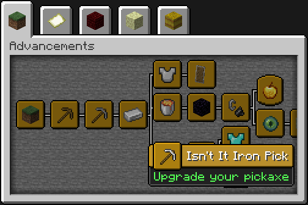
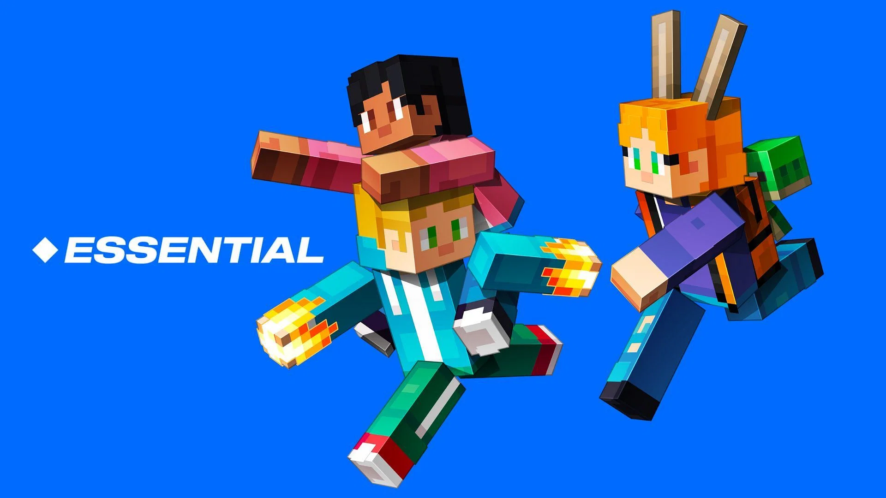

En esta página se hablará brevemente sobre mi experiencia jugando Minecraft en la versión 1.21.1 Tricky Trials.
La idea principal de empezar a jugar Minecraft fue conseguir todos sus logros, que son alrededor de 118, de los cuales he conseguido alrededor de 50.
Actualmente estoy jugando esta versión de Minecraft con amigos, gratuitamente gracias al Essential Mod. Con este mod, podemos jugar gratuitamente en modo multijugador usando mi PC como un servidor.
